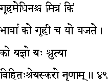
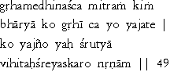

|

|
Verse 49 - Meaning:
Q:Who (kim) is the real friend (mitram) and well-wisher of a householder (Griha-medhinas-ca) ?
A:The faithful wife. (bhaaryaa)
Q:Who (ko) is a householder (grhii ca) ?
A:He who performs the ordained sacrifices or the yajnas.(yo yajate)
Q:What (ko) are Yajnas ?
A:What is prescribed in the Srutis or the Vedas (yat-srutyaa-vihitah)as a duty (nrnaam)for man's higher evolution. (sreyaskaro)
|